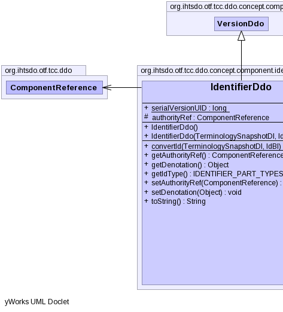
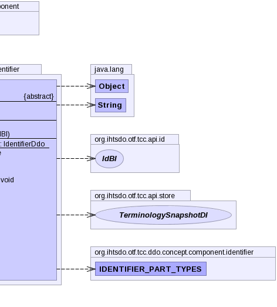

public abstract class IdentifierDdo extends VersionDdo
|  |  |
authorReferenceProperty, fxTimeProperty, moduleReferenceProperty, pathReferenceProperty, statusReferenceProperty| Modifier and Type | Field and Description |
|---|---|
protected ComponentReference |
authorityRef |
static long |
serialVersionUID |
unspecifiedUserUuid| Constructor and Description |
|---|
IdentifierDdo() |
IdentifierDdo(TerminologySnapshotDI ss,
IdBI id) |
| Modifier and Type | Method and Description |
|---|---|
static IdentifierDdo |
convertId(TerminologySnapshotDI ss,
IdBI id) |
ComponentReference |
getAuthorityRef() |
abstract Object |
getDenotation() |
abstract IDENTIFIER_PART_TYPES |
getIdType() |
void |
setAuthorityRef(ComponentReference authorityRef) |
abstract void |
setDenotation(Object denotation) |
String |
toString()
Returns a string representation of the object.
|
authorReferenceProperty, fxTimeProperty, getAuthorReference, getFxTime, getModuleReference, getPathReference, getStatus, getStatusString, getViewCoordinateUuid, informAboutUuid, moduleReferenceProperty, pathReferenceProperty, setAuthorReference, setFxTime, setModuleReference, setPathReference, setStatus, setStatusString, setViewCoordinateUuid, statusReferencePropertypublic static final long serialVersionUID
protected ComponentReference authorityRef
public IdentifierDdo()
public IdentifierDdo(TerminologySnapshotDI ss, IdBI id) throws IOException, ContradictionException
IOExceptionContradictionExceptionpublic static IdentifierDdo convertId(TerminologySnapshotDI ss, IdBI id) throws IOException, ContradictionException
IOExceptionContradictionExceptionpublic String toString()
toString in class VersionDdopublic ComponentReference getAuthorityRef()
public abstract Object getDenotation()
public abstract IDENTIFIER_PART_TYPES getIdType()
public void setAuthorityRef(ComponentReference authorityRef)
public abstract void setDenotation(Object denotation)
Copyright © 2014 International Health Terminology Standards Development Organisation. All rights reserved.